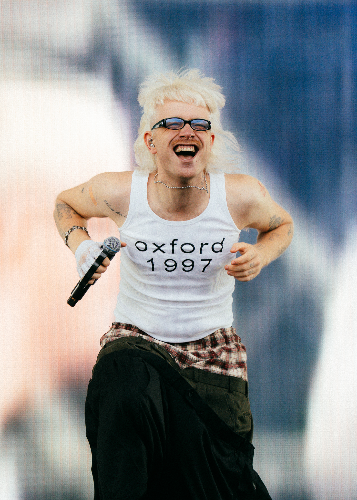
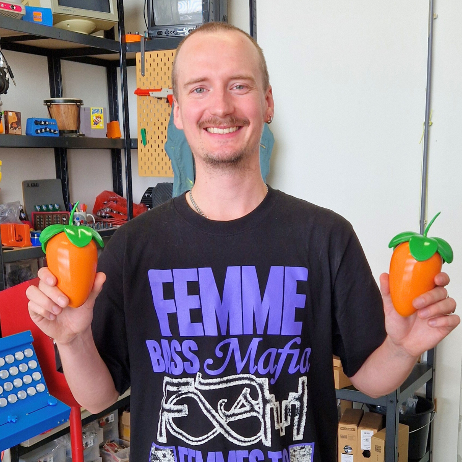

Draw & Play
Interactieve installatie

Wij maken interactieve installaties, muzikale webapps en muziekinstrumenten voor musea, podia en artiesten. We bedenken het, ontwerpen het en bouwen het, van het eerste idee tot een werkend resultaat.


Wij houden van techniek waar je mee speelt in plaats van naar kijkt.
Werk dat terugpraat. Sensoren die jou herkennen en er iets creatiefs mee doen: een camera die muziek bij je kiest, of een arcadekast waarin jij de avatar bent. Voor musea, festivals en beurzen.
Muziek en games die meteen werken in je browser, op elk apparaat. Van een leerling in de klas tot een QR-spel in de etalage.
Eenmalige objecten voor artiesten. Een instrument, reactieve lasers of een 3D-geprinte prop voor die ene show.
Samen met musea, artiesten, merken en scholen maken we speelse interactieve ervaringen die publiek activeren. Niet kijken, maar meedoen. We maakten eerder ervaringen voor:


Hoe vertaal je creatieve kunstenaarstaal naar iets technisch, zonder dat het zijn ziel verliest?

We hebben de afgelopen tijd samengewerkt met Teun de Kruif, beter bekend als Tantu Beats.

Afgelopen jaar lieten we ons weer horen bij de ingang van het stadhuis, weer aanwezig bij de MAKERDAYS Eindhoven.
Get in touch
Benieuwd of we samen iets kunnen maken? Stuur ons gerust een bericht.
Eindhoven, Noord-Brabant